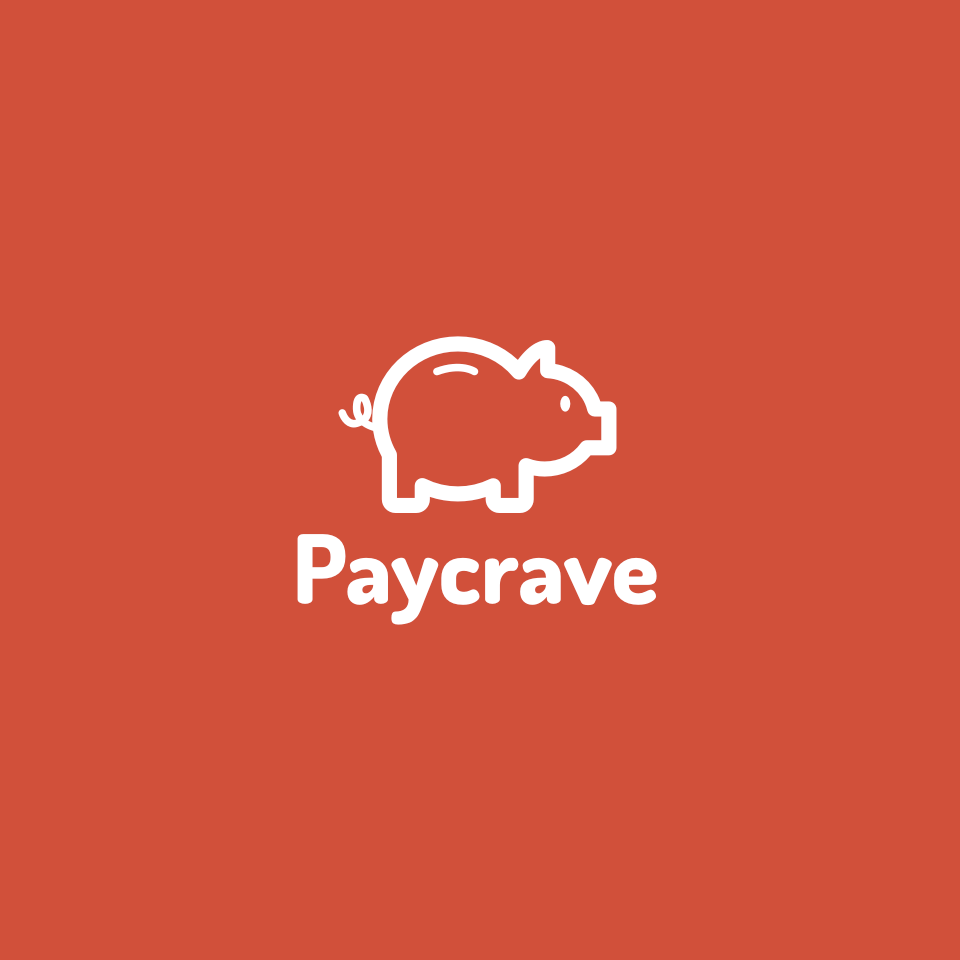
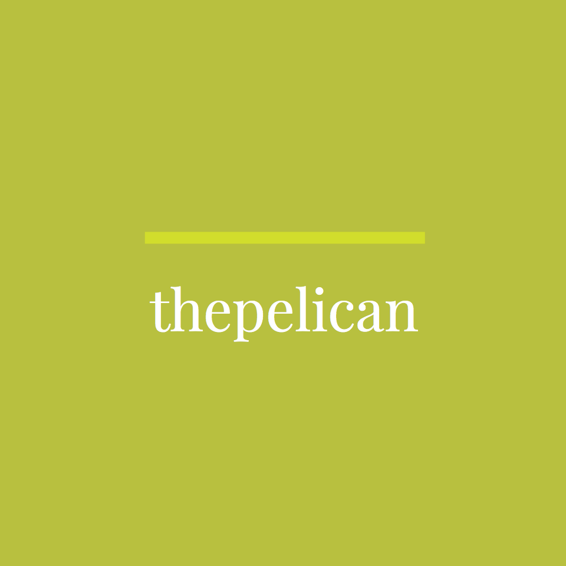
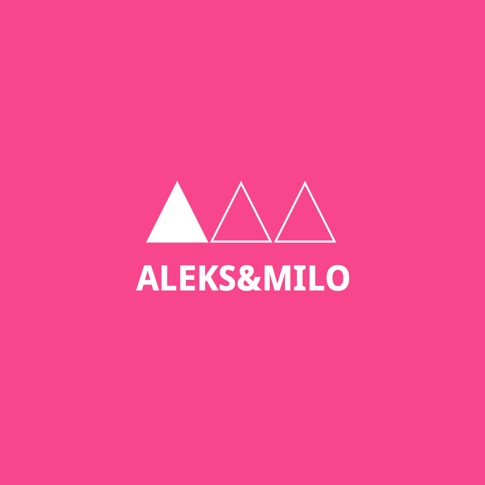

JOSE LUIS REYES
UX/UI DESIGNER
Paycrave is an assigned UX/UI project mobile application that lets foodies find food trucks in their area, view menus, select items, and make purchases.
VIEW CASE STUDY


The Pelican is a mockup UX/UI application that enables people to donate to specific causes as well as to crowdfund donations for pet charities and foundations.
VIEW CASE STUDYAleks & Milo is an assigned UX/UI project for an ecommerce fashion store geared towards a high-end shopping experience. Users can also browse this site on their mobile devices.
VIEW CASE STUDY
